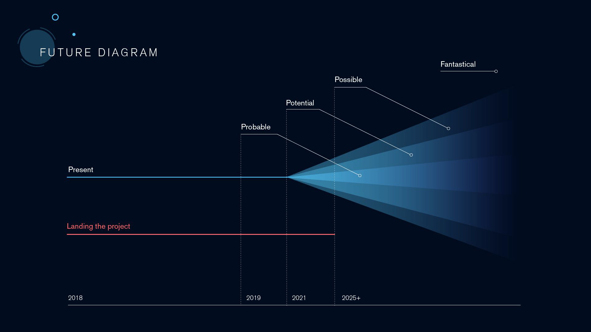
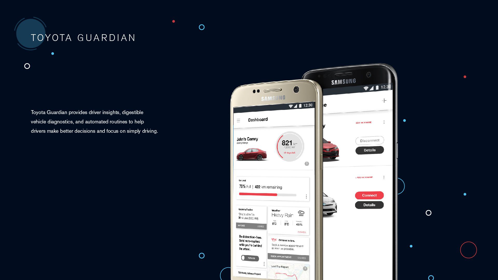
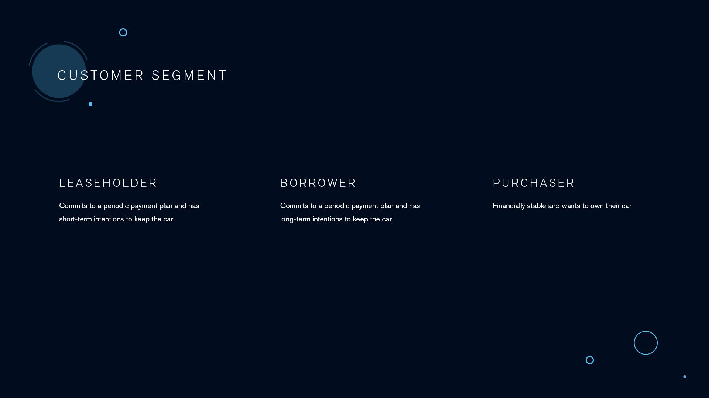
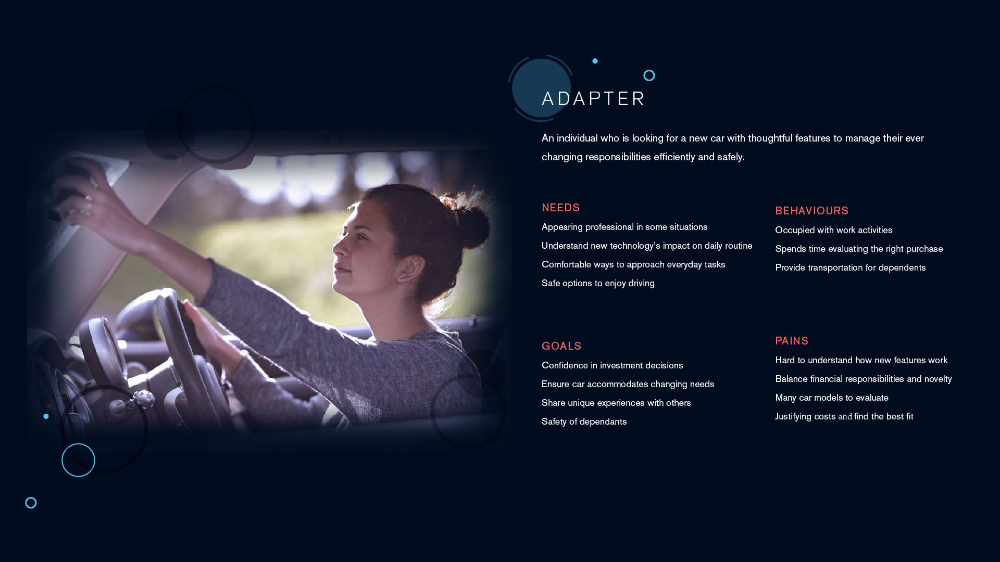
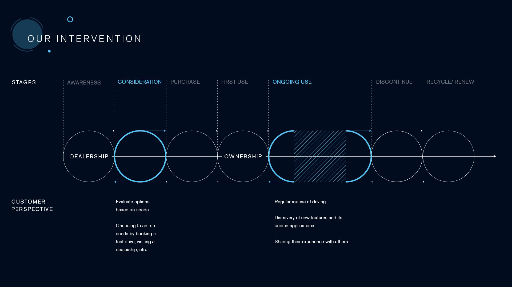
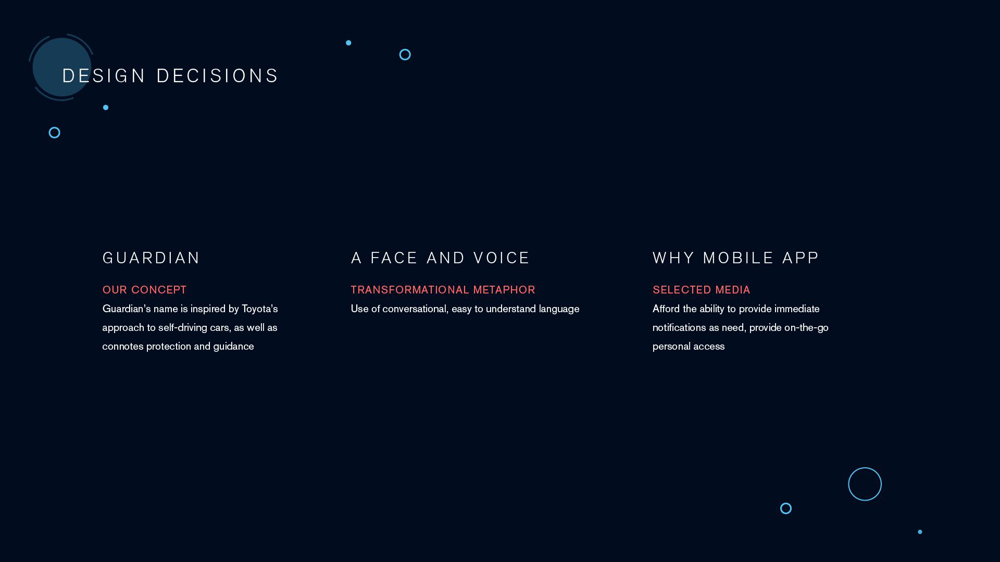

As the world’s largest auto manufacturer by volume, Toyota Motor Corporation’s commitment to safety has led their vehicles to consistently topping industry-standard safety rankings for the last decade. This commitment is a strong influence on the Toyota Research Institute, which seeks to continuously iterate their artificial intelligence and robotics technology to enhance safety and accessibility in mobility.
Due to the merits of our previous project VIA Journey, our team was generously given the opportunity to work with Chelsea Garber from Inamoto & Co on a real client prompt from Toyota. With Chelsea as our mentor in addition to our amazing teachers (Russell Taylor & Stevie Nguyen), we tackled the prompt: “how might we ease people into trusting self driving cars”?
Toyota Guardian is a mobile application that looks out for drivers throughout their vehicle ownership experience, leveraging existing Toyota technologies (particularly in automation and predictive intelligence) to build a transparent and trusting relationship today that extends into the self-driving tomorrow.
My Role: Lead Writer & Business Analyst, UX & Content Strategist, Technologist, External Relations
My Contribution:
Team: Sarah Tong, Michelle Ng, Gabriel Yeung, Grant Zou
Timeline: 4 weeks
Determining a relevant business problem for Toyota was the first obstacle we faced in this project. While many of our peers specifically selected clients with business problems, our assigned client was seeing success across its numerous business units. To further complicate things, the organization responsible for Toyota’s exploration into automation (Toyota Research Institute) was a non-commercial unit, with no immediate need for returns.
To address this, I clarified the nature of our prompt and client with Chelsea and determined that parent Toyota Motor Corporation was the ultimate client of our project. Combined with research this resulted in three findings:
Toyota is essentially fighting a battle on two fronts, trying to look ahead into the future while fending off competitors in the present. This problem became the focus of our project goals:
With fully autonomous vehicles still under development and too far off to demonstrate a clear value proposition or user base, we reframed our original prompt with our project goals in mind:
This prompt resonated with Raymond Lowey’s Most Advanced Yet Acceptable Principle, and by overlaying Toyota’s development trajectory with Anthony Dunne and Fiona Raby’s Futures Diagram we mapped out a potential timeline for autonomous rollout, with our project narrowing in on the ‘probable’ outcome space.
This concept of progressive iteration draws from one of Toyota’s core principles. With Kaizen, or continuous improvement we saw an opportunity to first develop and improve Toyota’s current product value proposition, building trust and transparency with Toyota’s existing autonomous technology. This would provide an immediate and tangible preview of Toyota’s future technologies, extending their value proposition as autonomous technology continues to be released.
With fully autonomous vehicles still under development and too far off to demonstrate a clear value proposition or user base, we reframed our original prompt with our project goals in mind:
This concept of progressive iteration draws from one of Toyota’s core principles. With Kaizen, or continuous improvement we saw an opportunity to first develop and improve Toyota’s current product value proposition, building trust and transparency with Toyota’s existing autonomous technology.
This would provide an immediate and tangible preview of Toyota’s future technologies, extending their value proposition as autonomous technology continues to be released. More importantly, it would scale the prompt down to a reasonable 4 week project.
Toyota Guardian seeks to make Toyota’s technology meaningful today, through providing driver insights, digestible vehicle diagnostics, and automated routines to help drivers make better decisions and focus on simply driving.
Toyota Guardian unifies both the business problem and design opportunity by:
Toyota Guardian gives owners today a reason to value autonomous technology, by providing tangible benefits. This builds trust in Toyota’s brand, and ultimately building a customer base that will remain receptive to any future products/technology that Toyota releases.
Thus, achieving our goal of making a measurable impact to Toyota today while easing people to trust in Toyota’s technology for the future.
While our app is intended for all owners, I made the decision for our team to focus on leaseholders due to the nature of leasing.
Representing over 30% of new car purchases, leaseholders have guaranteed return visits throughout the different stages of their ownership, providing multiple touchpoints to ensure that both previous and new customers are included.
The leaseholder customer cycle is much more predictable within a timeframe, and by easing leaseholders into trusting the credibility of Toyota’s technology today, they become a receptive audience more likely to purchase a semi-autonomous vehicle at the end of their lease in a few years time, when Toyota’s technology goes to market.
Our persona is an adapter, a younger individual considering the lower cost of leasing a vehicle in order to help them manage their daily routine. They may be unaware of the extent technology has developed since they last owned a vehicle, or how this technology could benefit them.
As we considered how our persona would influence our customer journey framework, we knew that the journey would take place over multiple years. We took this into account in our journey framework, identifying two key stages separated by a significant period of time.
Our journey framework begins from leasing at the dealership through ongoing use as an owner, to finally returning for a new vehicle at the end of their lease. While we highlighted two possible stages for intervention, we felt that resolving painpoints and adding value during ongoing use would be more effective at addressing customer apprehension in autonomous technology.
We then broke down the ongoing use stage even further, examining the daily routines of vehicle ownership. Here, rather than seeing frictions we identified missed opportunities; touchpoints where we could intervene by thoughtfully applying Toyota technology to add significant value to owners’ lives.
Three missed opportunities were identified:
Our persona is an adapter, a younger individual considering the lower cost of leasing a vehicle in order to help them manage their daily routine. They may be unaware of the extent technology has developed since they last owned a vehicle, or how this technology could benefit them.
Representing over 30% of new car purchases, leaseholders have guaranteed return visits throughout the different stages of their ownership, providing multiple touchpoints to ensure that both previous and new customers are included. In addition, easing leaseholders into trusting the credibility of Toyota’s technology today creates a receptive audience for Toyota's future autonomous technology when they return to end their lease.
Looking across the multi-year journey framework for leaseholders, we highlighted two possible stages for intervention. However, we felt that resolving painpoints and adding value during ongoing use would be more effective at addressing customer apprehension in autonomous technology. By breaking down the ongoing use stage even further, we found three missed opportunities where we could intervene by applying Toyota's technology to drivers' daily lives:
With the “Guardian” Concept, we wanted to reinforce safety in order to build trust in future technology. The Guardian name comes from one of Toyota’s early concepts, and connotes protection and guidance .
With humanizing data, we converted data into digestible information in the context of driving tasks using easy to understand language.
Finally, we believe an app is the best medium to harness the potential of providing immediate notifications as needed prior to driving, through personal on-the-go access.
Upon opening the app, owners are presented with two call-to-actions, with a conversational introduction to the value proposition Toyota Guardian is offering in order to motivate commitment.
On the dashboard, owners are provided snapshots of their vehicle in easy to understand language, providing a match between the system and the real world. From mileage and fuel consumption to weather and road conditions, information here is intended to help the driver make key decisions.
Between trips, Toyota Guardian provides a drivers’ log of events, showing trip details such as destination and fuel consumption.
Under Highlights, any notable events that trigger Toyota’s safety sensors is featured, with an incident report being generated as well as dashcam footage provided.
With routines, we wanted to highlight the benefits of automation and predictive artificial intelligence. If Toyota Guardian recognizes repeat behavior of the driver, such as regular drives to home and work, it will suggest automating certain aspects of the vehicle, minimizing the user’s memory load through recognition rather than recall.
Users can create their own routines as well, such as warming up the car and preloading navigation onto the car’s onboard infotainment system. This way, as soon as owners get into the vehicle, the app hands off to the vehicle, reducing routine cognitive overhead and allowing the owners to simply drive
Up until this point, Toyota Guardian has been designed to maximize the value proposition of Toyota’s existing vehicles to increase their competitive advantage in the fact of stagnating sales. Toyota Guardian achieves this by making automation and predictive intelligence meaningful and immediately valuable, easing both new and existing leaseholders into trusting new Toyota technologies as they become available. However, Chelsea encouraged us to push further and to speculate how Toyota Guardian could evolve alongside autonomous driving. We would move from the ‘probable’ project spectrum of the Futures Diagram, and investigate what else was possible.
As autonomous driving begins to disrupt traditional industries and shifting the economy towards subscription-based transportation services, we began to speculate how our Toyota Guardian could iterate and evolve in order to cope with the socio-economic implications.
Recently, Toyota has expressed interest in the concept of blockchain smart contracts. An interesting possibility would be allowing Toyota owners to rent out their vehicle’s unused time to earn money. This would balance well with our persona of young leaseholders, as part of their motivation for leasing is because of the lower upfront cost and preference for subscription-based services.
We see an opportunity to evolve our Toyota Guardian app to connect Toyota’s interest in smart contracts with cost-conscious leaseholders, by enabling car sharing services. This would simultaneously help Toyota collect driving data while saving owners money.
Ultimately, it would use the receptive audience built up over the next two years through Toyota Guardian and introduce them to the new era of mobility consumption in a familiar and valuable way.
For the first two weeks of this four-week project, Toyota Guardian was originally intended to be a in-dealership sales tool. Our early sprints and research led us to believe that the best way to bolster Toyota’s sales was to intervene at the “see-feel-touch” stage of the sales process, and that really highlighting the safety benefits of the technology was enough to differentiate Toyota’s products as well as getting users to trust in Toyota’s technology. We were so confident in our direction that we had completed scripts, prototypes, and even discussing ideas for product videos by the middle of the second week.
It was in the third week where Chelsea (kindly) challenged our assumptions, forcing us to reconsider sales associates as a conduit for trust. At the same time, we had managed to acquire an opportunity to interview one of the leading Toyota dealerships in BC.
Brad Hansen , the General Manager taught us so much! In that one-hour interview we gained access to a behind-the-scenes look of busy dealership, learning many of the nuances associated with auto sales. Many of our assumptions regarding the usefulness of a digital sales tool were refuted, and we had to revaluate our approach from near-scratch. Needless to say, the remaining two weeks went fast.
In the end, this pivot pushed us to design a much more thoughtful user experience; one that was impactful to the user and the business. We had to quickly reject ideas we were married to, conduct more sprints, rapidly prototype new ideas, and conduct feasibility studies all within a reduced time span.
Coming from our VIA Journey project, Toyota Guardian was a project at an entirely different scale. I was responsible for researching and analyzing the multi-national conglomerate that is the Toyota Motor Company, sifting through the different organizational priorities of various divisions and related organizations. The constraint we set of “making a measurable impact to Toyota today” meant I needed to find a way to align organizational objectives with user experience principles. I was incredibly happy when our teaching team and Chelsea found the decision to utilize the leaseholder business model intelligent; I had spent a significant amount of time and energy persuading my team that this differentiation mattered.
One of the unexpected challenges I faced was with technological feasibility; as a tech hobbyist and mild car enthusiast, the underlying technology behind Toyota Guardian and the autonomous technology we were tapping into made sense to me. However, it took time to convince my team that it wasn’t just wizardry, but wireless ad-hoc networking and a mixture of local and cloud processing that would provide the development stack behind our project.
In hindsight, the biggest regret I have was not defending one of my early ideas enough. I had this wild idea involving Toyota’s Kirobo Mini robot, their personal mobility division, cycling infrastructure and the Winter Olympics 2018. With our tight timeline however, I believe it was the right decision to scrap that idea (due to the ideation time needed and risk involved) and in order for us to move on.